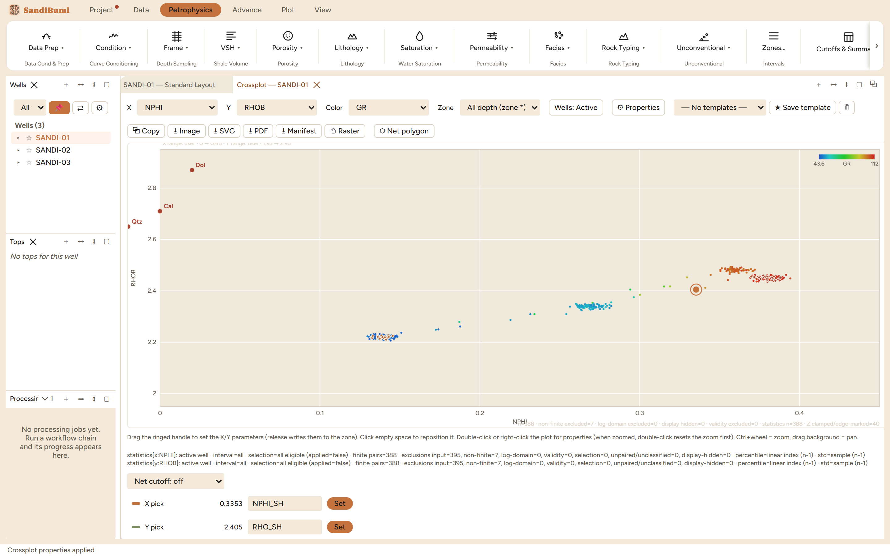
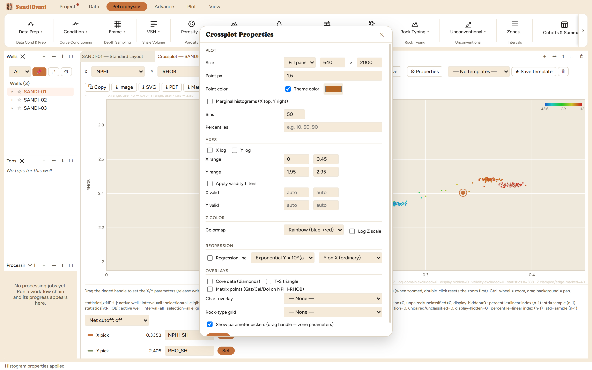

The crossplot is where two curves argue: lithology from NPHI–RHOB,
matrix from PEF, clay typing from Th–K, cementation from porosity
against resistivity. It is also a working tool rather than a picture, because
its parameter pickers write zone parameters directly: the point you drag to on
the shale cluster becomes NPHI_SH and RHO_SH for every module that reads
them.
The pane

NPHI–RHOB coloured by GR. The clean gas sand pulls left of
the quartz point, the shale cluster sits low-right, and the GR colouring
separates them without any curve doing double duty on an axis.
X, Y and Colour each take any resolvable curve. The audit line under the
plot reconciles the population (n, non-finite, log-domain, validity,
display-hidden, colour-clamped), and a statistics custody block states the
basis per axis, e.g. for the Y axis here:
statistics[y:RHOB]: active well · interval=all · selection=all eligible
(applied=false) · finite pairs=388 · exclusions input=395, non-finite=7,
log-domain=0, validity=0, selection=0, unpaired/unclassified=0,
display-hidden=0 · percentile=linear index (n-1) · std=sample (n-1)
Step by step
Open Plot ▸ New Crossplot, set X, Y and (optionally) Colour. A
discrete colour curve (FACIES) switches to categorical swatches with a
legend automatically.
Open ⚙ Properties for the rest: log axes, ranges, validity
filters, marginal histograms, the colormap, and a regression line with
the model (linear, exponential, power) and the fit direction stated,
Y on X, X on Y, or reduced major axis, because the three answer different
questions and give different slopes on the same cloud.
Overlays live in the same dialog: Core data (diamonds),
the T-S triangle, Matrix points (Qtz/Cal/Dol on NPHI-RHOB)
as in the figure above, and a Rock-type grid offering
Winland R35 (Kolodzie 1980) and Pittman r25/r35/r50 (1992) iso-pore-throat
lines on a porosity–permeability plot.
To write parameters, enable the pickers and drag the ringed handle onto
the cluster; the X pick / Y pick rows under the plot (NPHI_SH, RHO_SH on
the shipped pairing) each get a Set button that writes the zone
parameter. A net cutoff quadrant can be declared the same way.

The Properties dialog is non-blocking: the plot stays live
beside it, and Apply repaints without closing, so a threshold is tuned
against the picture rather than from memory.
Reading the result
Trust the audit line before the shape. On this pairing, 7 of 395 samples
fell to non-finite (the RHOB gap over the washout), and the colour range
clamps rather than drops: clamped points are edge-marked and counted, so a
colour that saturates at the scale end is visible as a statement, not hidden
as a lie.
QC and pitfalls
Vendor chart overlays are provenance-gated. The chart list names
each chart and its state; every entry currently reads
"BLOCKED: source provenance absent" and the plot refuses to draw it. That
is deliberate: a digitised vendor chart may only ship once its source and
derivation path are recorded, so a blocked chart is a licensing fact, not
a bug to work around.
A regression is a model choice. Y-on-X minimises vertical misfit
and is not the inverse of X-on-Y; RMA treats both axes as uncertain. Say
which one a quoted slope came from.
Dragged picks write parameters. Releasing the handle writes zone
parameters that downstream runs consume, and the edit is undoable; check
the zone scope before dragging on a multi-zone well.